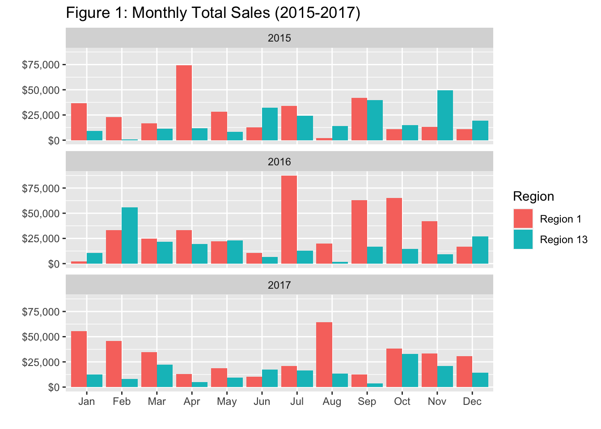
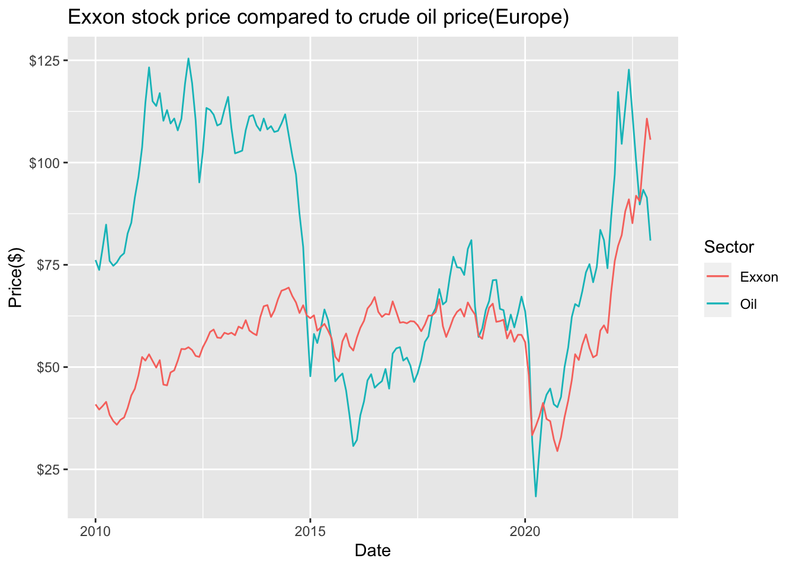
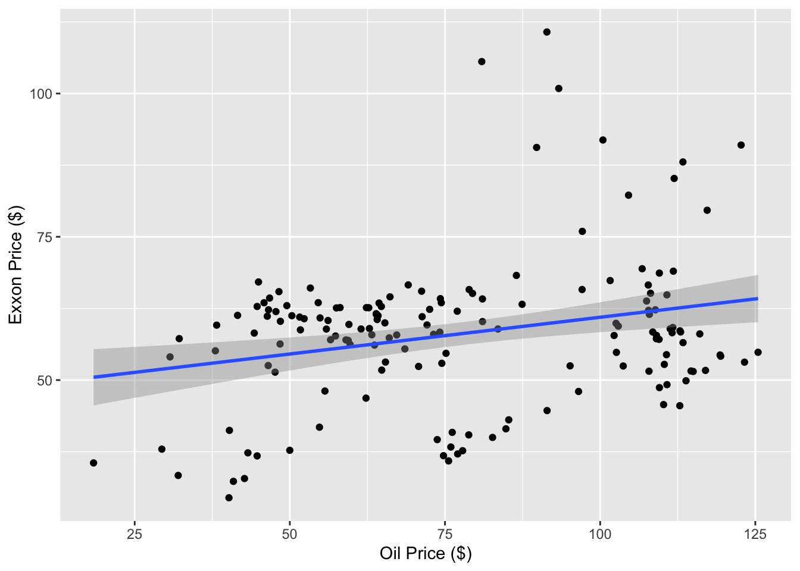

Assignment 4
Task 1.
1: For the last 3 months of 2017, calculate the total Sales by month, for Region 1 and Region 9 in the Customer_Segment, Corporate, and Consumer. This output is Table 1.
| Month | Customer_Segment | Region | Total_Sales | |
|---|---|---|---|---|
| 1 | Oct | Consumer | Region 1 | 815.79 |
| 2 | Oct | Consumer | Region 9 | 5908.89 |
| 3 | Oct | Corporate | Region 1 | 295.06 |
| 4 | Oct | Corporate | Region 9 | 16781.4315 |
| 5 | Nov | Consumer | Region 1 | 9480.47 |
| 6 | Nov | Consumer | Region 9 | 192.33 |
| 7 | Nov | Corporate | Region 1 | 8564.84 |
| 8 | Nov | Corporate | Region 9 | 5463.13 |
| 9 | Dec | Consumer | Region 1 | 210.06 |
| 10 | Dec | Corporate | Region 1 | 13260.8385 |
| 11 | Dec | Corporate | Region 9 | 9377.6475 |
| Table 1: Total sales in October, November and December for Region 1 and 9 | ||||
2: Make a plot of the monthly total Sales in Region 1 and Region 13 in 2015, 2016, and 2017. This output is Figure 1.

3: In Figure 1, identify the months where the total Sales in Region 13 is greater than the total Sales in Region 1. This output is Table 2.
| Year | Month | Region 13 | Region 1 | |
|---|---|---|---|---|
| 1 | 2016 | Jan | 10407.915 | 2362.43 |
| 2 | 2016 | Feb | 55631.953 | 33085.286 |
| 3 | 2016 | May | 22821.6975 | 22068.6705 |
| 4 | 2015 | Jun | 32306.88 | 12844.965 |
| 5 | 2017 | Jun | 17430.46 | 10335.3125 |
| 6 | 2015 | Aug | 13985.217 | 2266.96 |
| 7 | 2015 | Oct | 14885.24 | 11058.13 |
| 8 | 2015 | Nov | 49685.989 | 13290.26 |
| 9 | 2015 | Dec | 19514.9855 | 11048.1695 |
| 10 | 2016 | Dec | 26889.706 | 17020.268 |
| Table 2: Months where Region 13 has higher total sales than Region 1 | ||||
4: Find the average Profit per Customer_Segment and Product_Category in 2017, for all regions except Region 3, 5 and 8. What segment produced the highest average profit? This output is Table 3.
| Customer_Segment | Product_Category | Avg_Profit | |
|---|---|---|---|
| 1 | Corporate | Technology | 478.849777777778 |
| 2 | Small Business | Technology | 472.791325301205 |
| 3 | Home Office | Technology | 247.593300970874 |
| 4 | Consumer | Technology | 232.193827160494 |
| 5 | Corporate | Office Supplies | 149.051076115486 |
| 6 | Consumer | Office Supplies | 138.89775 |
| 7 | Small Business | Office Supplies | 98.5537566137566 |
| 8 | Home Office | Office Supplies | 76.4933734939759 |
| 9 | Home Office | Furniture | 33.729625 |
| 10 | Small Business | Furniture | 23.4355263157895 |
| 11 | Consumer | Furniture | 6.312027027027 |
| 12 | Corporate | Furniture | -83.9074149659864 |
| Table 3: Descending average profit per customer segment and category category in 2017 excluding regions 3, 5 and 8 | |||
Task 2.
In this task, feel free to use any API or package/library that downloads the data to your session. Use code and download daily stock prices for Exxon Mobil Corporation (XOM), traded at NYSE. The Yahoo! Finance site is a convenient place to find the data . Use the Adjusted closing price from January 4th 2010 as the starting date. And calculate the monthly average using trading volume as a weight, and save this variable as “exxon”.
Use code to download the daily Brent Crude Oil Price from FRED from January 4th 2010 as the starting date. And calculate the monthly arithmetic average. Save the monthly arithmetic average values as “oil”.
In both variables, take December 2022, or 2022:12 for shorthand as a last data point.
Plot both variables, i.e., exxon and oil ” in the same plot window. Here, the x-axis should be the “date” variable. Comment on the plots.

We can see that the price differs largely until 2015 when the oil prices drops from about 112$ to below 50$ in a short time span. Thereafter the prices seems to somewhat correlate.
Now take “exxon” as a y-variable and “oil” as an x-variable.

Use R’s lm() function. Set the variable on the y-axis and x-axis, and specify the data set.
LM(<Y variable name> ~ <X variable>, data=<dataset name>)
Call:
lm(formula = exxon ~ oil, data = plot)
Coefficients:
(Intercept) oil
48.1373 0.1282 After “running” the code, how do you interpret the estimated coefficients?
The estimated coefficients tells us the equation of the linear regression model: exxonprice = 0.1282*x + 48.1373
The intercept coefficient tells us the predicted value of exxon when oil value is equal to zero.
The oil estimate tells us the slope of the coefficient. Meaning that for every one dollar increase in oil price the exxon price would increase by 0.1282 dollars.